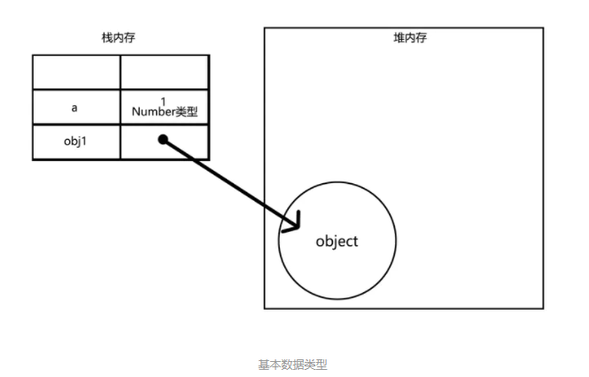
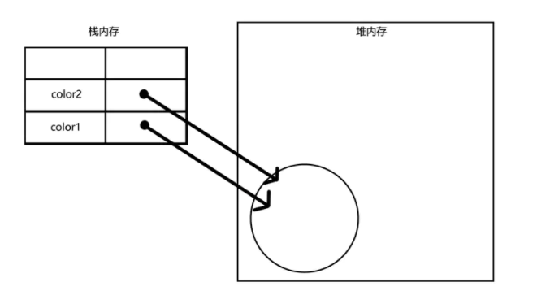
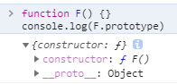
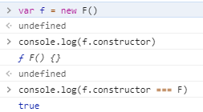
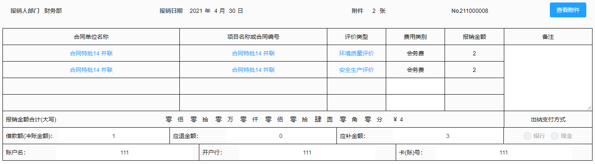
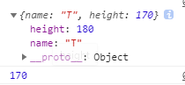
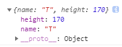

数组
数组方法
查找数组是否含有某元素
const arrNaN = ['a', 2, 2, NaN, ' '];
除了使用数组循环自己判断，用原生方法
// 可以查找NaN（目前唯一）
console.log(arrNaN.includes(NaN)); //true
console.log(arrNaN.indexOf(NaN)); //-1
console.log(arrNaN.lastIndexOf(2)); //2 从后面查找，返回元素下标
// 回调函数，找到第一个跳出循环，返回元素
console.log(arrNaN.find(o => o === 2)); //2
console.log(arrNaN.find(o => o === NaN)); //undefined
// 找到第一个跳出循环，返回元素下标
console.log(arrNaN.findIndex(o => o === 2)); //1
console.log(arrNaN.findIndex(o => o === NaN)); //-1
// 找到第一个跳出循环，返回布尔
console.log(arrNaN.some(o => o === 2)); //true
console.log(arrNaN.some(o => o === NaN)); //false
// 一直查找，返回数组
console.log(arrNaN.filter(o => o === 2)); //[2, 2]
console.log(arrNaN.filter(o => o === NaN)); //[]
连接数组
const arr1 = [1, 2, 'a'];
const arr2 = [2, 3, NaN];
console.log(arr1.concat(arr2)); //[1, 2, 'a', 2, 3, NaN]
console.log(arr1); //[1, 2, 'a']
console.log(arr1.push.apply(arr1, arr2)); //6 直接改变原数组
console.log(arr1); //[1, 2, 'a', 2, 3, NaN]
console.log([...arr1, ...arr2]); //[1, 2, "a", 2, 3, NaN, 2, 3, NaN]
console.log(arr1.splice(arr1.length, 0, ...arr2)); //[] 直接改变原数组
console.log(arr1); //[1, 2, "a", 2, 3, NaN, 2, 3, NaN]
去除对象数组中的全空对象元素
let arr = [
{name: 'aaa', number: '', compony: ''},
{name: '', number: 2, compony: ''},
{name: '', number: '', compony: 'aaa科技'},
{name: '', number: '', compony: ''},
{name: 'aaa', number: 2, compony: 'aaa科技'}
]
console.log(_.filter(arr, o => isHasEle(o)));
console.log(arr.filter(o => isHasEle(o)));
// 返回数据
[
{name: 'aaa', number: '', compony: ''},
{name: '', number: 2, compony: ''},
{name: '', number: '', compony: 'aaa科技'},
{name: 'aaa', number: 2, compony: 'aaa科技'}
]
添加判断: 只要填写（有非空元素），其它数据也必须存在（这里用了elementUI）
oBtn.click = function () {
let arr1 = arr.filter(o => isHasEle(o));
if (arr1.length === 0) {
// 未填写内容
this.$message.error('请输入物品名称');
return;
}
// 判断必填字段
for(let i = 0; i < arr.length; i++) {
if(!arr[i].name) {
this.$message.error('请输入物品名称');
return;
}
else if (!arr[i].number) {
this.$message.error('请输入数量');
return;
}
else if (!arr[i].compony) {
this.$message.error('请输入公司');
return;
}
}
// 进行下一步操作，如提交
api.post(arr1).then(res => { ··· })
}
Object
Object.assign
- 简单的说就是通过复制一个或多个对象来创建一个新的对象。
- MDN描述 用于将所有可枚举属性的值从一个或多个源对象分配到目标对象。
示例
const target = { a: 1, b: 2 };
const source = { b: 4, c: 5 };
const returnedTarget = Object.assign(target, source);
console.log(target);
// expected output: Object { a: 1, b: 4, c: 5 }
console.log(returnedTarget);
// expected output: Object { a: 1, b: 4, c: 5 }
语法
Object.assign(target, ...sources)
参数
target: 目标对象
sources: 源对象
返回值
目标对象
相关描述
如果目标对象中的属性具有相同的键，则属性将被源对象中的属性覆盖。后面的源对象的属性将类似地覆盖前面的源对象的属性。
Object.assign 方法只会拷贝源对象自身的并且可枚举的属性到目标对象。该方法使用源对象的[[Get]]和目标对象的[[Set]]，所以它会调用相关 getter 和 setter。因此，它分配属性，而不仅仅是复制或定义新的属性。如果合并源包含getter，这可能使其不适合将新属性合并到原型中。为了将属性定义（包括其可枚举性）复制到原型，应使用Object.getOwnPropertyDescriptor()和Object.defineProperty() 。
String类型和 Symbol 类型的属性都会被拷贝。
在出现错误的情况下，例如，如果属性不可写，会引发TypeError，如果在引发错误之前添加了任何属性，则可以更改target对象。
Object.assign 不会在那些source对象值为 null或 undefined 的时候抛出错误。
针对深拷贝，需要使用其他办法，因为 Object.assign()拷贝的是属性值。假如源对象的属性值是一个对象的引用，那么它也只指向那个引用。也就是说，如果对象的属性值为简单类型（如string， number），通过Object.assign({},srcObj)，得到的新对象为深拷贝；如果属性值为对象或其它引用类型，那对于这个对象而言其实是浅拷贝的。
针对最后一条描述的示例
let obj = { a: 1, b: 2, c: { d: 10 } };
let copy = Object.assign({}, obj);
copy.a = 3; //深拷贝
copy.c.c1 = 11; //浅拷贝
console.log(obj);
//{ a: 1, b: 2, c: { d: 11 } }
console.log(copy);
//{ a: 3, b: 2, c: { d: 11 } }
整体实例
复制一个对象
const obj = { a: 1 }; const copy = Object.assign({}, obj); console.log(copy); // { a: 1 }深拷贝对象属性
let obj = { a: 1, b: 2, c: { d: 10 } }; let copyDeep = Object.assign({}, JSON.parse(JSON.stringify(obj))); copyDeep.a = 3; copyDeep.c.d = 11; console.log(obj); //{ a: 1, b: 2, c: { d: 10 } } console.log(copyDeep); //{ a: 3, b: 2, c: { d: 11 } }合并对象
const o1 = { a: 1 }; const o2 = { b: 2 }; const o3 = { c: 3 }; const obj = Object.assign(o1, o2, o3); console.log(obj); // { a: 1, b: 2, c: 3 } console.log(o1); // { a: 1, b: 2, c: 3 } 注意目标对象自身也会改变。 console.log(o2); // { b: 2 } 因为o1在第一位，如不想改变，用{}合并具有相同属性的对象
const o1 = { a: 1, b: 1, c: 1 }; const o2 = { b: 2, c: 2 }; const o3 = { c: 3 }; const obj = Object.assign({}, o1, o2, o3); console.log(obj); // { a: 1, b: 2, c: 3 }继承属性和不可枚举属性是不能拷贝的
const obj = Object.create({foo: 1}, { // foo 是个继承属性。 bar: { value: 2 // bar 是个不可枚举属性。 }, baz: { value: 3, enumerable: true // baz 是个自身可枚举属性。 } }); const copy = Object.assign({}, obj); console.log(copy); // { baz: 3 }原始类型会被包装为对象(只有字符串的包装对象才可能有自身可枚举属性)
const v1 = "abc"; const v2 = true; const v3 = 10; const v4 = Symbol("foo"); const obj = Object.assign({}, v1, null, v2, undefined, v3, v4); // 原始类型会被包装，null 和 undefined 会被忽略。 // 这里只有字符串被包装为对象。 console.log(obj); // { "0": "a", "1": "b", "2": "c" }异常会打断后续拷贝任务
const target = Object.defineProperty({}, "foo", { value: 1, writable: false }); // target 的 foo 属性是个只读属性。 Object.assign(target, {bar: 2}, {foo2: 3, foo: 3, foo3: 3}, {baz: 4}); // TypeError: "foo" is read-only // 注意这个异常是在拷贝第二个源对象的第二个属性时发生的。 console.log(target.bar); // 2，说明第一个源对象拷贝成功了。 console.log(target.foo2); // 3，说明第二个源对象的第一个属性也拷贝成功了。 console.log(target.foo); // 1，只读属性不能被覆盖，所以第二个源对象的第二个属性拷贝失败了。 console.log(target.foo3); // undefined，异常之后 assign 方法就退出了，第三个属性是不会被拷贝到的。 console.log(target.baz); // undefined，第三个源对象更是不会被拷贝到的。
判断对象是否有元素不为空
全为空返回false, 含有非空元素返回true
// lodash.js
isHasEle(obj) {
let flag = false;
_.forIn(obj, value => {
if(value || value === 0) {
// 0保证元素可能为0的情况
flag = true;
}
})
return flag;
}
// 普通使用
function isHasEle(obj) {
let flag = false;
for(let key in obj) {
if(obj[key] || obj[key] === 0) {
flag = true;
}
}
return flag;
}
console.log(isHasEle({a: '', b: ''})); //false
console.log(isHasEle({a: 1, b: ''})); //true
console.log(isHasEle({a: 0, b: ''})); //true
数据类型及相关问题
js数据类型及其存储
1、 基本数据类型：数值(number)、字符串(string)、布尔(boolean)、null、undefined、Symbol(ES6新定义)
2、 引用数据类型：对象(数组、正则表达式、日期、函数)
Object分为本地对象、内置对象和宿主对象。
本地对象：独立于宿主环境的ECMAScript实现提供的对象，简单的说就是ECMA定义的类。他们包括：Object Function Array String Boolean Number Date RegExp Error EvalError RangeError ReferenceError SyntaxError TypeError URIError，这里的String等类型是它的定义类型，如new String('str')var str1='hello'; var str2=new String("hello"); typeof str1 //string typeof str2 //object //如果想获取str2的字符串，可以通过str2.toString() str1 instanceof String //false str2 instanceof String //true内置对象：定义：“由ECMAScript实现提供的、独立于宿主环境的所有对象，在ECMAScript程序开始执行时出现”。这意味着开发者不必明确实例化内置对象，它已经被实例化了。内置对象只有两个 Global和 Math,他们其实也是本地对象，根据定义每个内置对象都是本地对象。
宿主对象：所有非本地对象都是宿主对象，即由ECMAScript实现的宿主环境提供的对象。所有 BOM和 DOM对象都是宿主对象。
基本数据类型保存在栈内存，引用类型保存在堆内存中。根本原因在于保存在栈内存的必须是大小固定的数据，引用类型的大小不固定，只能保存在堆内存中，但是可以把它的地址写在栈内存中以供我们访问。
如果是基本数据类型，则按值访问，操作的就是变量保存的值；如果是引用类型的值，我们只是通过保存在变量中的引用类型的地址来操作实际对象。
var a = 1;//定义了一个number类型
var obj1 = {//定义了一个object类型
name:'obj'
};

1、基本类型的复制
var a = 1;
var b = a; //复制
console.log(b) //1
a = 2;//改变a的值
console.log(b) //1
赋值的时候，在栈内存中重新开辟内存，存放变量b，所以在栈内存中分别存放着变量a、b各自的值，修改时互不影响。
2、引用类型的复制
var color1 = ['red','green'];
var color2 = color1; //复制
console.log(color2) //['red','green'];
color1.push('black') ; //改变color1的值
console.log(color2) //['red','green','black']
color1与color2指向堆内存中同一地址的同一对象，复制的只是引用地址。

深浅拷贝
深浅拷贝
浅拷贝只复制指向某个对象的指针，而不复制对象本身，新旧对象还是共享同一块内存。但深拷贝会另外创造一个一模一样的对象，新对象跟原对象不共享内存，修改新对象不会改到原对象。
1、浅拷贝
浅拷贝只是拷贝基本类型的数据，如果父对象的属性等于数组或另一个对象，那么实际上，子对象获得的只是一个内存地址，因此存在父对象被篡改的可能，浅拷贝只复制指向某个对象的指针，而不复制对象本身，新旧对象还是共享同一块内存。
浅拷贝函数
function simpleClone(initalObj) {
var obj = {};
for ( var i in initalObj) {
obj[i] = initalObj[i];
}
return obj;
}
2、深拷贝 深拷贝就是能够实现真正意义上的数组和对象的拷贝。递归调用"浅拷贝"。（深拷贝会另外创造一个一模一样的对象，新对象跟原对象不共享内存，修改新对象不会改到原对象）
深拷贝函数
写法一
function deepClone(initalObj, finalObj) {
var obj = finalObj || {};
for (var i in initalObj) {
var prop = initalObj[i];
// 避免相互引用对象导致死循环，如initalObj.a = initalObj的情况
if(prop === obj) {
continue;
}
if (typeof prop === 'object') {
obj[i] = (prop.constructor === Array) ? [] : {};
arguments.callee(prop, obj[i]);
} else {
obj[i] = prop;
}
}
return obj;
}
写法二
function deepClone(initalObj, finalObj) {
var obj = finalObj || {};
for (var i in initalObj) {
var prop = initalObj[i];
// 避免相互引用对象导致死循环，如initalObj.a = initalObj的情况
if(prop === obj) {
continue;
}
if (typeof prop === 'object') {
obj[i] = (prop.constructor === Array) ? [] : Object.create(prop);
} else {
obj[i] = prop;
}
}
return obj;
}
深拷贝实现方式
1、以上深拷贝函数
2、JSON.stringify 和 JSON.parse
可以转成 JSON 格式的对象才能使用这种方法，如果对象中包含 function 或 RegExp 这些就不能用这种方法了。
function deepClone(obj) {
let _obj = JSON.stringify(obj);
let objClone = JSON.parse(_obj);
return objClone;
}
或者
copy = JSON.parse(JSON.stringify(obj));
3、Object.assign()
当对象中只有一级属性，没有二级属性的时候，此方法为深拷贝，但是对象中有对象的时候，此方法，在二级属性以后就是浅拷贝。
copy = Object.assign({}, obj);
4、lodash.cloneDeep()
需要先引入lodash才能使用
copy = _.cloneDeep(obj);
5、递归
function deepClone(obj){
let objClone = Array.isArray(obj)?[]:{};
if(obj && typeof obj==="object"){
for(key in obj){
if(obj.hasOwnProperty(key)){
//判断ojb子元素是否为对象，如果是，递归复制
if(obj[key]&&typeof obj[key] ==="object"){
objClone[key] = deepClone(obj[key]);
}else{
//如果不是，简单复制
objClone[key] = obj[key];
}
}
}
}
return objClone;
}
判断js数据类型
判断数据类型的方法一般可以通过：typeof、instanceof、constructor、toString四种常用方法。
typeof
typeof操作符返回一个字符串，表示未经计算的操作数的类型。
返回结果包括：number、boolean、string、object、undefined、function、symbol等7种数据类型。
简单理解就是typeof是判断的是原始类型（值类型），但函数返回的是function，引用类型返回的基本上都是object，null返回的也是object，因为所有对象的原型链最终都指向了Object，null被认为是一个空的对象引用，当我们需要知道某个对象的具体类型时，typeof 就显得有些力不从心了。
console.log(typeof 2); //number
console.log(typeof '2'); //string
console.log(typeof true); //boolean
console.log(typeof Symbol()); //symbol
console.log(typeof undefined); //undefined
console.log(typeof null); //object
console.log(typeof (() => 's')); //function
console.log(typeof [1, 3, 's']); //object
console.log(typeof new Date()); //object
console.log(typeof new RegExp()); //object
instanceof
instanceof 运算符用来测试一个对象（第一个参数）在其原型链中是否存在一个构造函数（第二个参数）的 prototype 属性。
换言之，判断A是否为B的实例，表达式为：A instanceof B，如果A是B的实例，则返回true，否则返回false。 在这里需要特别注意的是：instanceof检测的是原型，我们用一段伪代码来模拟其内部执行过程：
instanceof (A, B) = {
var L = A.__proto__;
var R = B.prototype;
if(L === R) {
// A的内部属性 __proto__ 指向 B 的原型对象
return true;
}
return false;
}
从上述过程可以看出，当 A 的 __proto__ 指向 B 的 prototype 时，就认为 A 就是 B 的实例，我们再来看几个例子：
console.log([] instanceof Array);// true
console.log({} instanceof Object);// true
console.log(new Date() instanceof Date);// true
function Person(){};
console.log(new Person() instanceof Person); //true
console.log([] instanceof Object);// true
console.log(new Date() instanceof Object);// true
console.log(new Person() instanceof Object);// true
虽然 instanceof 能够判断出 [ ] 是Array的实例，但它认为 [ ] 也是Object的实例
从 instanceof 能够判断出 [ ].__proto__ 指向 Array.prototype，而 Array.prototype.__proto__ 又指向了Object.prototype，最终 Object.prototype.__proto__ 指向了null，标志着原型链的结束。因此，[]、Array、Object 就在内部形成了一条原型链：
从原型链可以看出，[] 的 __proto__ 直接指向Array.prototype，间接指向 Object.prototype，所以按照 instanceof 的判断规则，[] 就是Object的实例。依次类推，类似的 new Date()、new Person() 也会形成一条对应的原型链 。因此，instanceof 只能用来判断两个对象是否属于实例关系， 而不能判断一个对象实例具体属于哪种类型。
相应判断：
console.log(2 instanceof Number); //false
console.log(new Number(2) instanceof Number); //true
console.log('2' instanceof String); //false
console.log(new String('2') instanceof String); //true
console.log(true instanceof Boolean); //false
console.log(new Boolean(true) instanceof Boolean); //true
console.log(Symbol() instanceof Symbol); //false
console.log(null instanceof Object); //false
console.log(undefined instanceof Object); //false
console.log({} instanceof Object); //true
console.log(/a/ instanceof RegExp); //true
console.log(/a/ instanceof Object); //true
console.log((() => {}) instanceof Function); //true
从上面的运行结果我们可以看到，基本数据类型是没有检测出他们的类型，但是我们使用对象实例化的方式，是可以检测出类型的。
constructor
当一个函数 F被定义时，JS引擎会为F添加 prototype 原型，然后再在 prototype上添加一个 constructor 属性，并让其指向 F 的引用。如下所示： 
当执行 var f = new F() 时，F 被当成了构造函数，f 是F的实例对象，此时 F 原型上的 constructor 传递到了 f 上，因此 f.constructor == F。 
可以看出，F 利用原型对象上的 constructor 引用了自身，当 F 作为构造函数来创建对象时，原型上的 constructor 就被遗传到了新创建的对象上， 从原型链角度讲，构造函数 F 就是新对象的类型。这样做的意义是，让新对象在诞生以后，就具有可追溯的数据类型。
console.log('2'.constructor === String); //true
console.log(2.constructor === Number); //浏览器报错
let num = 2; console.log(num.constructor === Number); //true
console.log(new Number(2).constructor === Number); //true
console.log(true.constructor === Boolean); //true
console.log(Symbol().constructor === Symbol); //true
console.log(null.constructor === Object); //报错
console.log(undefined.constructor === Object); //报错
console.log({}.constructor === Object); //true
console.log((new Date()).constructor === Date); //true
console.log((new Date()).constructor === Object); //false
console.log((() => {}).constructor === Function); //true
null 和 undefined 是无效的对象，因此是不会有 constructor 存在的，故报错，这两种类型的数据需要通过其他方式来判断。
另外，函数的 constructor 是不稳定的，这个主要体现在自定义对象上，当开发者重写 prototype 后，原有的 constructor 引用会丢失，constructor 会默认为 Object。
function F() {}
F.prototype = { a: 1 }
let f = new F();
console.log(f.constructor === F) //false
console.log(f.constructor); //ƒ Object() { [native code] }
console.log(f.constructor === Object); //true
因为 prototype 被重新赋值的是一个 { }， { } 是 new Object() 的字面量，因此 new Object() 会将 Object 原型上的 constructor 传递给 { }，也就是 Object 本身。
因此，为了规范开发，在重写对象原型时一般都需要重新给 constructor 赋值，以保证对象实例的类型不被篡改。
Object.prototype.toString
可以说不管是什么类型，它都可以立即判断出，推荐使用。
toString() 是 Object 的原型方法，调用该方法，默认返回当前对象的 [[Class]] (其调用者的具体类型)。这是一个内部属性，其格式为 [object Xxx] ，其中 Xxx 就是对象的类型。
对于 Object 对象，直接调用 toString() 就能返回 [object Object] 。而对于其他对象，则需要通过 call / apply 来调用才能返回正确的类型信息。
console.log(Object.prototype.toString.call(2)); //[object Number]
console.log(Object.prototype.toString.call('2')); //[object String]
console.log(Object.prototype.toString.call(true)); //[object Boolean]
console.log(Object.prototype.toString.call(Symbol())); //[object Symbol]
console.log(Object.prototype.toString.call(null)); //[object Null]
console.log(Object.prototype.toString.call(undefined)); //[object Undefined]
console.log(Object.prototype.toString.call(new Date())); //[object Date]
console.log(Object.prototype.toString.call({})); //[object Object]
console.log(Object.prototype.toString.call([])); //[object Array]
console.log(Object.prototype.toString.call(/a/)); //[object RegExp]
console.log(Object.prototype.toString.call(() => {})); //[object Function]
console.log(Object.prototype.toString.call(new Error())); //[object Error]
console.log(Object.prototype.toString.call(document)); //[object HTMLDocument]
console.log(Object.prototype.toString.call(window)); //[object Window] window 是全局对象 global 的引用
优缺点
| typeof | instanceof | constructor | Object.prototype.toString.call | |
|---|---|---|---|---|
| 优点 | 使用简单 | 能检测出引用类型 | 基本能检测所有的类型（除了null和undefined） | 检测出所有的类型 |
| 缺点 | 只能检测出基本类型（除null） | 不能检测出基本类型，且不能跨iframe | constructor易被修改，也不能跨iframe | IE6下，undefined和null均为Object |
测试：跨页面判断是否是数组
var oF = document.createElement('iframe');
document.body.appendChild( oF );
var ifArray = window.frames[0].Array;
var arr = new ifArray();
console.log( typeof arr ); //object
console.log( arr.constructor == Array ); //false
console.log( arr instanceof Array ); //false
console.log( Object.prototype.toString.call(arr) == '[object Array]' ); //true
从结果中可以看出，constructor和instanceof都没有正确的判断出类型。
项目中的一些问题
根据数组某个元素循环请求api，按顺序获得相应值

 描述：获取详情页，内部含有一个申请表格，根据表格内部项目id按顺序再生成对应的表格。相当于是先请求了一个接口获得一个数组，后需要再根据这个数组内的各个id获取相应的值整合成为新数组，循环展示表格。
描述：获取详情页，内部含有一个申请表格，根据表格内部项目id按顺序再生成对应的表格。相当于是先请求了一个接口获得一个数组，后需要再根据这个数组内的各个id获取相应的值整合成为新数组，循环展示表格。
思路：api请求是异步操作，直接按数组id循环请求，push到新数组中，很可能和原数组顺序不一致，在需要保证先后值的前提下，将请求放入数组中，考虑用promise.all或者async。
1、直接push
顺序随机
projectList: [
{id: 0, name: 'aaa'},
{id: 1, name: 'bbb'}
]
_.forEach(projectList, item => {
api.getList({ id: item.id }).then(res => {
this.list.push(res.data)
})
})
2、promise.all
将api请求循环放入数组中，通过promise.all执行
let atemp = _.map(projectList, item =>
// 使用Promise用于异步计算
new Promise((resolve, reject) => {
api.getList({ id: item.id }).then(res => {
resolve(res)
}, err => {
reject(err)
})
})
)
Promise.all(atemp).then(res => {
// 全部执行结束，保证执行顺序
console.log(res);
res是两个api返回数据组成得数组
//数据处理
···
}).catch(err => {
console.log('error', err)
})
3、单个表格还需要分页
需要一个对应的分页数组，切换分页时需要判断是哪一个表格，再调取接口修改相应的一个表格数据
// 拼接请求参数
this.reimburseRecords = _.map(projectList, item => {
return {
project_id: item.project_id,
limit: 10,
page: 1
}
})
// 拼接请求顺序
let atemp = _.map(projectList, (item, index) => this.getHistoryReim(index));
// 全部执行结束，保证执行顺序
Promise.all(atemp).then(res => {
this.reimburseRecordsList = res;
}).catch(err => {
console.log('error', err)
})
getHistoryReim(index) {
// 获取记录
return new Promise((resolve, reject) => {
ApplyApi.getHistoryReim(this.reimburseRecords[index]).then(res => {
if(res.data.data.length !== 0) {
// 如果需要在最后一行添加一些内容
res.data.data.push({
id: 'sum',
contract_number: '项目签约金额',
party_a: res.data.meta.custom.signed_money + '万元',
project_name: '已报销金额总计',
project_type: res.data.meta.custom.reimburse_money + '万元',
reimburse_fee: -1,
reimburse_fee_type_name: res.data.meta.custom.loan_strike_a_balance_money_not + '万元',
created_at: ' '
})
}
resolve(res.data.data);
}, err => {
this.$message.error(err.data.message)
reject(err)
})
})
}
handleSizeChange (val, index) {
// 切换每页条数
this.reimburseRecords[index].limit = val;
this.getHistoryReim(index).then(res => {
this.$set(this.reimburseRecordsList, index, res);
})
},
handleCurrentChange (val, index) {
// 切换当前页
this.reimburseRecords[index].page = val;
this.getHistoryReim(index).then(res => {
this.$set(this.reimburseRecordsList, index, res);
})
},
题库编程
基础
1、以下代码，控制台打印什么
const obj = {
name: 'T',
height: 170
}
console.log(obj);
console.log(obj.height);
obj.height = 180;

- 不展开对象看时，console.log()是按照代码执行顺序，同步地输出了对象当时的快照（只输出一个对象的引用）。所以我们看到的是预期的值。
- 展开对象时，它其实是重新去内存中读取对象的属性值，此时对象属性已被更改，所以展开对象后，可能看到的不是预期值了。
- console.log()在控制台输出引用值时确实是当时的值，但是你点开箭头的时候它会重新获取这些引用的值。
当我们在输出对象时我们看到的数据是异步处理最终的值，但是当我们仅输出对象中的某一key时，输出的值就是当前的值，从中我们可以看出实际上不同的浏览器实际异步处理的是对象的引用，当我们console.log输出对象时调用的是一个引用，如果我们仅输出其中的值，浏览器就不会进行异步处理输出最终的调用值。同理使用JSON.stringfy一样，浏览器仅仅异步处理对象，并不会处理序列化JSON字符串，所有输出的数据是当前的值，而不是最终值。
console.log()打印出来的内容并不是一定百分百可信的内容。一般对于基本类型number、string、boolean、null、undefined的输出是可信的，但对于Object等引用类型来说，则就会出现上述异常打印输出。
将对象序列化JSON.stringify为字符串
const obj = {
name: 'T',
height: 170
}
console.log(JSON.parse(JSON.stringify(obj)));
obj.height = 180;

2、将-0转换成字符串输出
const a = -0;
console.log(a); //-0（Number）
console.log(a.toString()); // 0
console.log(a.toLocaleString()); //-0
字符串类
去除字符串中最后一个指定字符
注意：不是字符串最末尾的字符
初步想法
function PopStr(str, char) {
if(typeof(str) !== 'string') {
return '非字符串';
}
if(str.indexOf(char) === -1) {
return `不含${char}字符`;
}
const index = str.lastIndexOf(char);
// return str.substring(0, index) + str.substring(index + 1, str.length); // 提取字符串中两个指定的索引号之间的字符。
// return str.substr(0, index) + str.substr(index + 1, str.length - index); // 从起始索引号提取字符串中指定数目的字符。
// ECMAscript 没有对该方法进行标准化，因此反对使用它
return str.slice(0, index) + str.slice(index + 1, str.length); // 提取字符串的片断(两个索引)，并在新的字符串中返回被提取的部分。
}
console.log(PopStr('abcsdfdsf', 's')); //abcsdfdf
console.log(PopStr(1, 's')); //非字符串
console.log(PopStr('abcsdfdsf', 'z')); //不含z字符
看到的别人的解法
function delLast(str, target) {
return str.split('').reverse().join('').replace(target, '').split('').reverse().join('');
}
console.log(delLast('asdfghhj', 'h')) // asdfghj
console.log(delLast('asdfghhj', 'z')) // asdfghhj
console.log(delLast(1, 'a')) // 报错，str.split is not a function
function delLast(str,target) {
let reg =new RegExp(`${target}(?=([^${target}]*)$)`)
return str.replace(reg,'')
}
console.log(delLast('asdfghhj', 'h')) // asdfghj
console.log(delLast('asdfghhj', 'z')) // asdfghhj
console.log(delLast(1, 'a')) // 报错，str.replace is not a function
后面相关示例不再判断类型
把下划线命名转成驼峰命名
function toUp(name) {
return name.split('_').map((o, i) => {
if(i === 0) {
return o;
}
else {
return o.charAt(0).toUpperCase() + o.substring(1, o.length);
}
}).join('');
}
console.log(toUp('first_name_abc')); //firstNameAbc
把字符串中的字符切换大小写
function strConvert(str) {
return str.split('').map(o => {
if(o.charCodeAt() < 97) return o.toLowerCase();
else return o.toUpperCase();
}).join('');
}
console.log(strConvert('AbCddzGg')); //aBcDDZgG
统计一个字符串中另一个字符串出现的次数
function sumStr(str, subStr) {
return str.split(subStr).length - 1;
}
console.log(sumStr('abcfgfhbcskdfbcbc', 'bc')); //4
console.log(sumStr('abcfgfhbcskdfbcbc', 'qqq')); //0
console.log(sumStr('abcfgfhbcskdfbcbc', 'f')); //3
简单的字符串加密解密
<script type="text/javascript">
var oStr = "中国人";
var obj = compileStr(oStr);
console.log(obj);
var objStr = uncompileStr(obj);
console.log(objStr);
//对字符串进行加密
function compileStr(code){
var c=String.fromCharCode(code.charCodeAt(0)+code.length);
for(var i=1;i<code.length;i++){
c+=String.fromCharCode(code.charCodeAt(i)+code.charCodeAt(i-1));
}
return escape(c);
}
//字符串进行解密
function uncompileStr(code){
code = unescape(code);
var c=String.fromCharCode(code.charCodeAt(0)-code.length);
for(var i=1;i<code.length;i++){
c+=String.fromCharCode(code.charCodeAt(i)-c.charCodeAt(i-1));
}
return c;
}
</script>
数组类
递归实现数组长度为5且元素为2-32间不重复的值
- 生成一个长度为5的空数组arr。
- 生成一个（2－32）之间的随机整数rand。
- 把随机数rand插入到数组arr内，如果数组arr内已存在与rand相同的数字，则重新生成随机数rand并插入到arr内，需要使用递归实现，不能使用for/while等循环
- 最终输出一个长度为5，且内容不重复的数组arr
代码演示
let length = 5, i = 0;
let arr = new Array(length);
function build() {
let rand = Math.floor(Math.random() * 31 + 2); //31 => 32-2+1
if(!arr.includes(rand)) {
arr[i] = rand;
i++;
}
return arr[length-1] ? arr : build();
}
console.log(build());